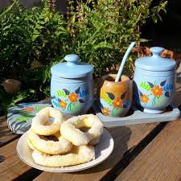

incio
quien soy
La Cocina de Mica
Rosquitos de Vino

Ingredientes
1kg Harina Leudante
200g Azucar
120ml Aceite
200ml Vino blanco
Preparacion
Batir el aceite con el azucar
Incorporar el vino
Agregar de a poco la harina hasta obtener una masa
dar forma de rosquitos
cocinar en horno a 180°C, 15 minutos
una vez frios, pasar por vino y azucar
Disfrutar con unos ricos mates :)